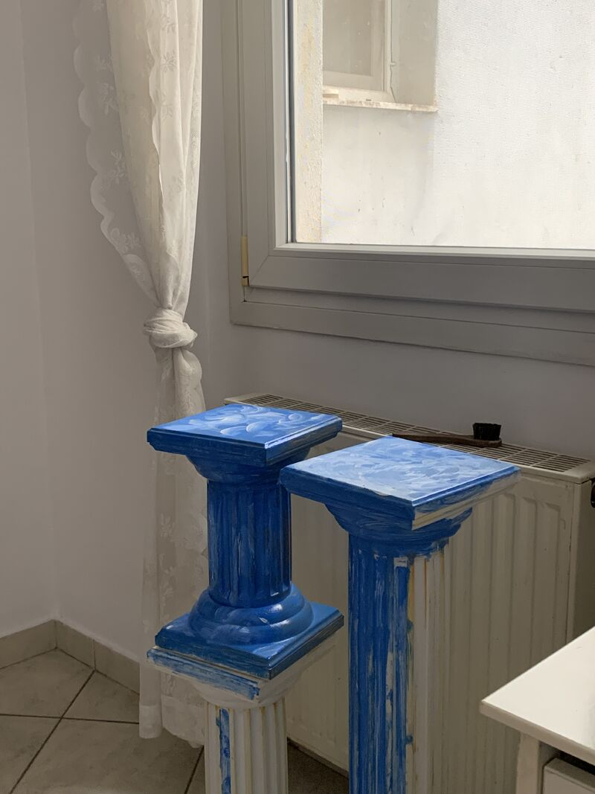

Typewriter
Words, when they need somewhere to go. Essays, urban reflections, and the occasional post.

On LinkedIn
I think AI can't be an artist. Despite all the efforts.
I am proud of the fact that I enjoy painting, occasionally. I don't limit myself to paper and canvases, though. Living with me means you might come home and notice that a piece of furniture is all of a sudden painted in Bauhaus style with red and blue.
I started painting in 2023 when I wanted to paint some columns to decorate my new apartment. And until I bought the paint and brushes, I was missing two things: the skills and the tools. After I got the tools, I was missing the skills. After I painted the columns, I started painting everything and I loved it. So I started to develop the skills, bit by bit.
The more I painted, the better I became. The one thing I never lacked, was the inspiration. I could let myself create in the most childish ways.
If we rewind a bit, I've always had the inspiration but I never expressed it because I thought I lacked the skills and the tools. AI has both, but it does not have an identity, that can be reformed again and again. We are the inspiration; AI is the instrument. It may have the skills and the tools, but the spark will always be ours.
I wonder if that's one way to see it. I definitely will always love the process of starting something new: the magic that comes with learning to be an amateur.
We are so uncomfortable with being amateurs, that we end up doing only half of the things we could otherwise do. Other mammals, or the AI tools in question, don't take themselves too seriously, and don't second-guess their existence. And that might just be our weak point in the arts; that we overthink and under-do.
But in the meantime, we can use AI in art, and still keep our artistic selves alive. We are the inspiration, and we can combine colors and concepts in unique ways. I believe AI is uncomfortable with randomness and abstract concepts. That's where we'll always come in, to grab a brush and give life to what we have in front of us. In art, we need the ability to befriend the vulnerability of abstraction.
AI will always miss one thing: being human, with every single bit of emotion that comes along. And it will always mimic just that, when prompted to create.
On Parallaxi
Essays for the city.
Personal essays and urban reflections on memory, grief, belonging and collective life, written for Thessaloniki's independent city magazine, Parallaxi.